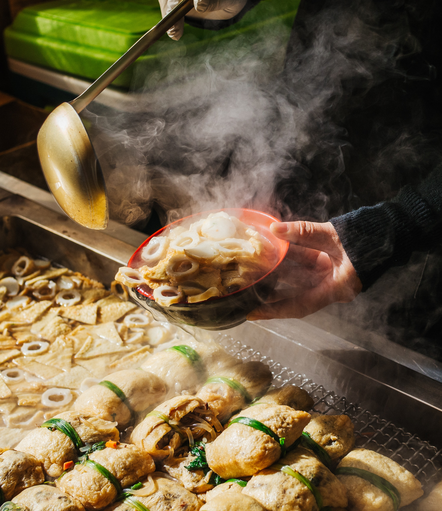

| article about street food | |
| Some fast-food operators are trying to replicate the success of fast casual restaurants with initiatives like adding healthy fare. In the past month, we’ve seen Wendy’s roll out a grilled chicken sandwich on a multigrain bun and Domino’s introduce a line of salads. But offering better-for-you food doesn’t always translate to higher sales. That’s because the consumer interest in healthful fare is higher than their desire to eat said fare. Take a look at the top 10 fast-food brands that ranked highest for “availability of healthy options” in 2015 on Technomic’s Consumer Brand Metrics (CBM) tool, which asks consumers to rate brands on a range of attributes. Three brands— Subway , Quiznos and Pinkberry—reported a decline in year-over-year sales for 2015, and three more—Luby’s, Golden Corral and Sizzler—had year-over-year sales increases less than 1%. In fact, the average year-over-year change in sales for these 10 chains was -0.3% |  |
Designed by shukri